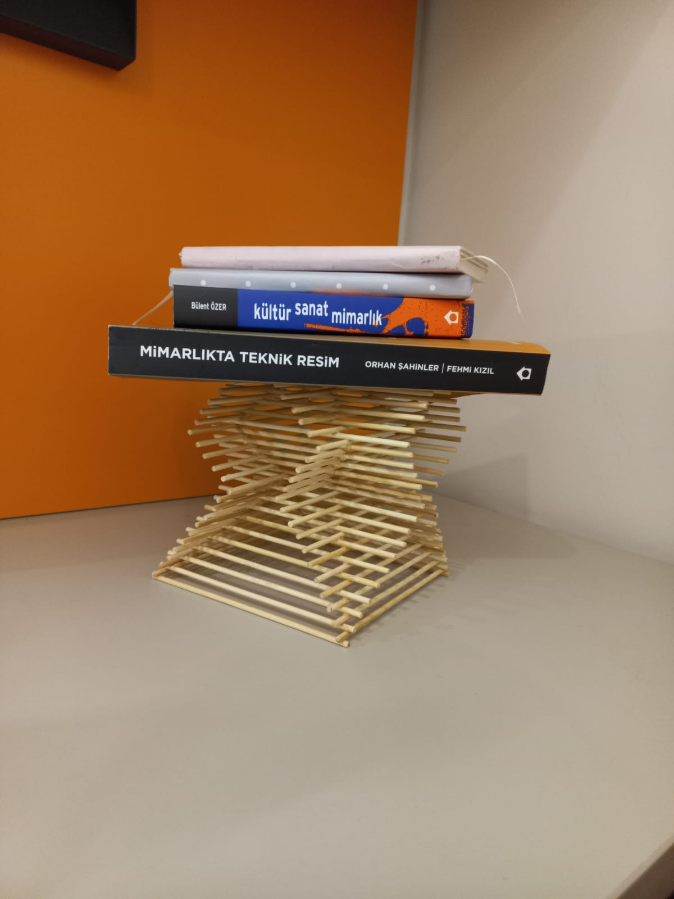
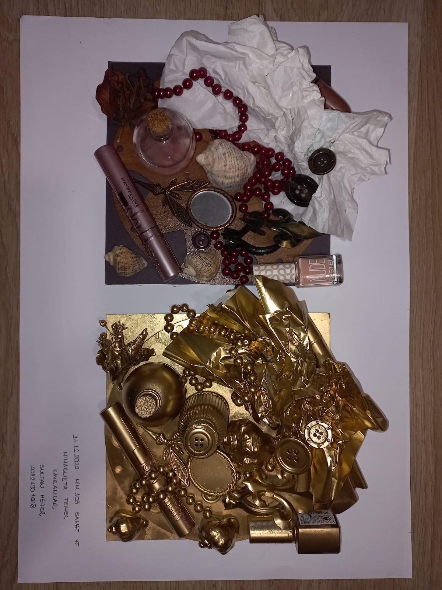

ÇALIŞMALARIM

Bu maket yaklaşık 2 mm mukavva ile uygun kesim tekniklerine göre yaklaşık 2 günde tamamlanmıltır.
Bu maket aslında duygu karmaşasının somut bir temsili. Bu ödev kapamında bizden bir küp içerisinde belirlediğimiz bir kavramı somutlaştırmamız istenmişti.

Bu makette ise bizden statik-mukavemet dersi kapsamında işlediğimiz kavramlardan yola çıkarak bir maket yapmamız istenmişti.

Bu çalışma ise yine aslında şeffaf veya birbiri ile çok da alakalı olmayan objelerin berbaer boyandığında bir bütün haline gelmesini gösterdiğimiz bir ödev idi.